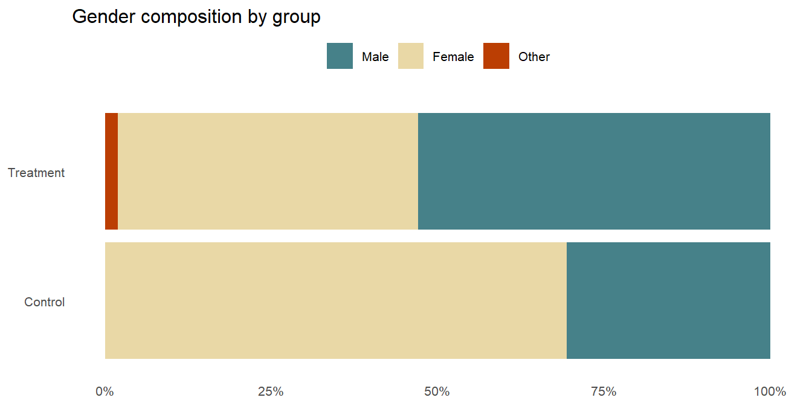
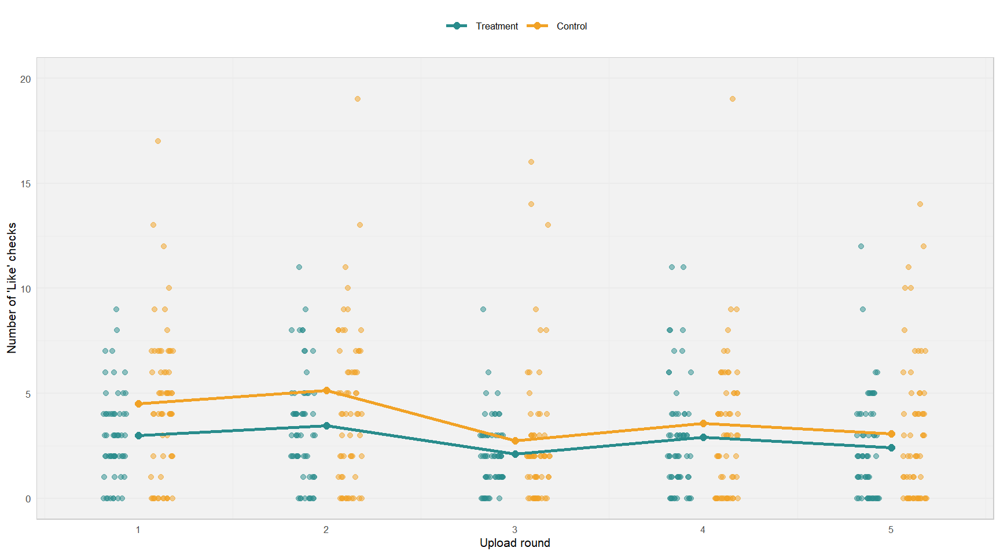
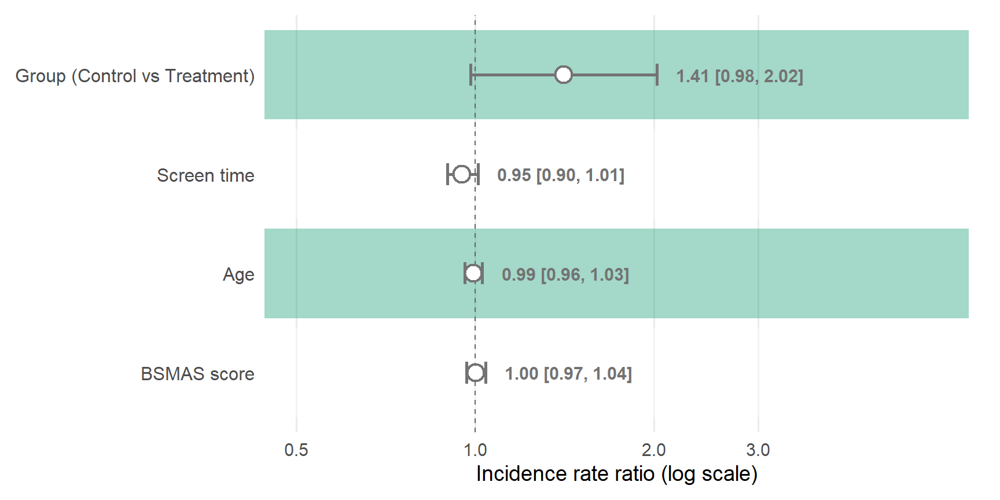
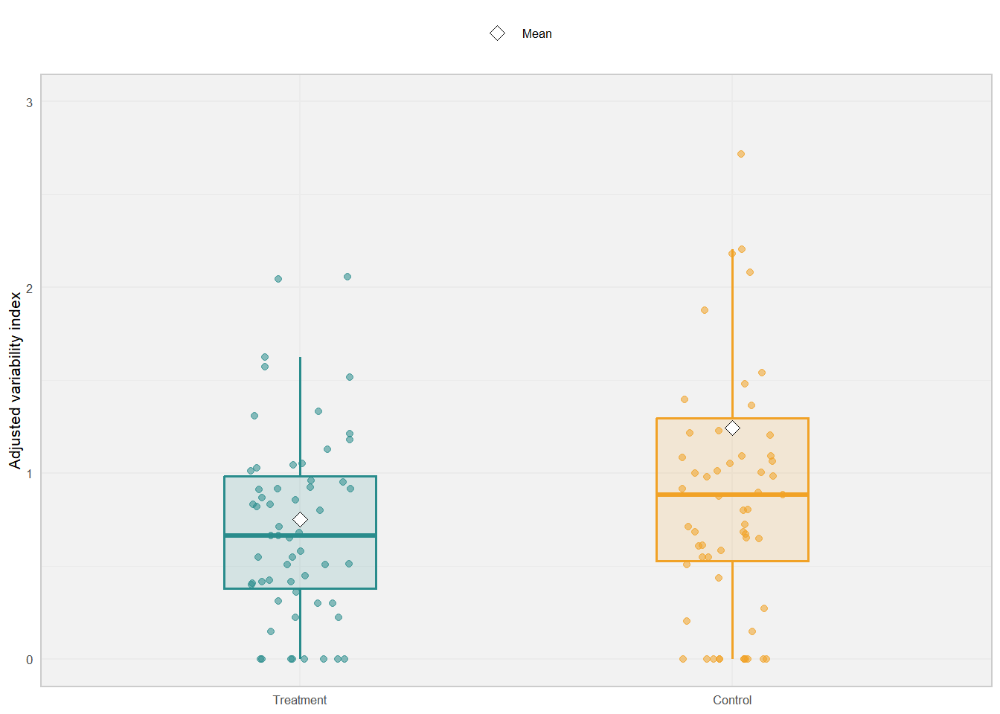

Show code
library(tidyverse)
library(MASS)
library(brms)
library(effectsize)
library(pwr)
library(performance)
library(broom)
# Prevent MASS from masking dplyr
select <- dplyr::select
filter <- dplyr::filterThis study investigated whether reward timing uncertainty in social media causally increases compulsive checking behaviour. 100 participants were randomly assigned to one of two conditions in an online behavioural task built on Gorilla Experiment Builder:
There is a demo and upgraded version of the task available on my github made with python. You can access the task via this link. I try constantly to upgrade and improve the task.
The key question: does simply not knowing when your likes will arrive make you check more obsessively?
All analyses were conducted in RStudio (version 2025.05.1+513) using R version 4.5.1.
Some part of the code, text, and design in this document were developed, edited and improved with the help of AI tools like ChatGPT and Claude. However, the data itself is entirely original and was neither generated nor altered by AI.
Here are the packages needed to reproduce this analysis. A quick note on what each one does:
glm.nb()library(tidyverse)
library(MASS)
library(brms)
library(effectsize)
library(pwr)
library(performance)
library(broom)
# Prevent MASS from masking dplyr
select <- dplyr::select
filter <- dplyr::filterThe raw data comes from four separate CSV files exported from Gorilla and a supplementary questionnaire. Here is what each file contains:
| File | Contents |
|---|---|
bsmas.csv |
Bergen Social Media Addiction Scale responses, 6 items, Likert 1–5 |
age_gender.csv |
Participant age (years) and gender (1 = Male, 2 = Female, 3 = Other) |
screen_time.csv |
Self-reported daily screen time in HH.MM format, e.g. 6.35 = 6 h 35 min |
task.csv |
Full event log from the Gorilla task — one row per action, with timestamps, IDs, group assignment, and button presses |
age_gender <- read_csv("data_csv/AgeGender.csv")
screenTime <- read_csv("data_csv/screen_time.csv")
BSMAS <- read_csv("data_csv/BSMAS.csv")
controlGroup <- read_csv("data_csv/task_control.csv")
treatmentGroup <- read_csv("data_csv/task_treatment.csv")The BSMAS is a Likert questionnaire (Very rarely → Very often, scored 1–5). We recode the text responses and sum them into a single BSMAS_Score per participant:
BSMAS <- BSMAS |>
mutate(across(Q1:Q6, ~ case_when(
. == "Very rarely" ~ 1, . == "Rarely" ~ 2,
. == "Sometimes" ~ 3, . == "Often" ~ 4,
. == "Very often" ~ 5
))) |>
mutate(BSMAS_Score = Q1 + Q2 + Q3 + Q4 + Q5 + Q6)The key linking variable is Participant Private ID. We join everything and immediately select only what we need:
pre_task_data <- BSMAS |>
left_join(age_gender, by = "Participant Private ID") |>
left_join(screenTime, by = "Participant Private ID") |>
select(
id = `Participant Private ID`,
participant_status = `Participant Status.x`,
group = Group,
age = Age,
gender = Gender,
screen_time = Screentime,
BSMAS_Score
)
The raw task files log every event on the platform. We filter down to just “Check Likes” button presses, count them per round, and derive two outcome variables:
checkLikes — total clicks across all 5 rounds (primary outcome, H1)variability_index — SD of rate-adjusted clicks across rounds (primary outcome, H2) ::: callout-note ## Why adjust for rate? Each round had a different waiting time (2, 3, 1, 2, and 3 minutes). Without adjustment, a 3-minute round would naturally accumulate more clicks, not because someone is more anxious, but simply because there’s more time to click. Dividing by waiting time makes rounds directly comparable. (This will further investigated via timestampts and time logs) :::The waiting times per round were fixed for all participants: 2, 3, 1, 2, and 3 minutes respectively.
count_likes <- function(df) {
df |>
filter(Response %in% c("Like 1", "Like 2", "Like 3", "Like 4", "Like 5")) |>
count(`Participant Private ID`, Response, `Participant Status`) |>
complete(`Participant Private ID`, Response,
fill = list(n = 0, `Participant Status` = NA_character_)) |>
pivot_wider(names_from = Response, values_from = n, values_fill = 0) |>
rename(like1 = `Like 1`, like2 = `Like 2`, like3 = `Like 3`,
like4 = `Like 4`, like5 = `Like 5`) |>
mutate(
checkLikes = like1 + like2 + like3 + like4 + like5,
rate1 = like1/2, rate2 = like2/3, rate3 = like3/1,
rate4 = like4/2, rate5 = like5/3,
variability_index = apply(cbind(rate1, rate2, rate3, rate4, rate5), 1, sd)
)
}
controlGroup_computed <- count_likes(controlGroup)
treatmentGroup_computed <- count_likes(treatmentGroup)We stack both groups and join with the demographic data. Outliers are flagged using the Median Absolute Deviation (MAD) method — a robust alternative to SD-based exclusion that is less sensitive to extreme values. We flag anyone whose checkLikes falls outside ±3 MAD of their group median, then remove them before any modelling. For more removing outlier methods you can visit Bartlett & Tovio (2024).
pre_finalData <- bind_rows(controlGroup_computed, treatmentGroup_computed) |>
left_join(pre_task_data, by = c("Participant Private ID" = "id"))
mad_bounds <- pre_finalData |>
drop_na(checkLikes) |>
group_by(group) |>
summarise(
median_cl = median(checkLikes),
mad_cl = 3 * mad(checkLikes),
lower = median_cl - mad_cl,
upper = median_cl + mad_cl,
.groups = "drop"
)
finalData <- pre_finalData |>
drop_na(checkLikes) |>
inner_join(mad_bounds, by = "group") |>
filter(checkLikes >= lower, checkLikes <= upper)After exclusion we are left with N = 100 participants (49 Control, 51 Treatment).
finalData |>
group_by(group) |>
summarise(
N = n(),
Age_M = round(mean(age, na.rm = TRUE), 1),
Age_SD = round(sd(age, na.rm = TRUE), 1),
Female_pct = round(mean(gender == 2, na.rm = TRUE) * 100, 1),
BSMAS_M = round(mean(BSMAS_Score, na.rm = TRUE), 1),
BSMAS_SD = round(sd(BSMAS_Score, na.rm = TRUE), 1),
ScreenTime_M = round(mean(screen_time, na.rm = TRUE), 2)
)| group | N | Age_M | Age_SD | Female_pct | BSMAS_M | BSMAS_SD | ScreenTime_M |
|---|---|---|---|---|---|---|---|
| Control | 63 | 28.5 | 5.2 | 61.9 | 17.0 | 5.5 | 5.94 |
| Treatment | 59 | 29.2 | 5.9 | 47.5 | 16.2 | 4.9 | 5.04 |
Groups look reasonably balanced on age and BSMAS score, which is reassuring given random assignment. The one noticeable difference is gender composition, the Control group skewed more female than Treatment. We control for gender in all regression models just to be safe.
gender_df <- tribble(
~group, ~gender, ~n,
"Treatment", "Male", 27, "Treatment", "Female", 23, "Treatment", "Other", 1,
"Control", "Male", 15, "Control", "Female", 34, "Control", "Other", 0
) |>
mutate(group = factor(group, levels = c("Control", "Treatment")),
gender = factor(gender, levels = c("Male", "Female", "Other")))
ggplot(gender_df, aes(x = n, y = group, fill = gender)) +
geom_col(position = "fill") +
scale_x_continuous(labels = scales::percent) +
scale_fill_manual(values = c("Male" = "#468189", "Female" = "#e9d8a6", "Other" = "#bb3e03")) +
labs(x = NULL, y = NULL, fill = NULL, title = "Gender composition by group") +
theme_minimal(base_size = 10) +
theme(legend.position = "top", panel.grid = element_blank())
H1: Participants in the uncertain (Control) condition will check for likes more frequently than those in the predictable (Treatment) condition.
The outcome here is checkLikes, the total number of times a participant clicked a “Check Likes” button across all five upload rounds. We tackle this in three steps: visualise, then test, then model.
group_cols <- c("Treatment" = "#298c8c", "Control" = "#f1a226")
round_long <- finalData |>
select(`Participant Private ID`, group, like1, like2, like3, like4, like5) |>
pivot_longer(like1:like5, names_to = "round", values_to = "checks") |>
mutate(round_num = as.integer(str_remove(round, "like")),
group = factor(group, levels = c("Treatment", "Control")))
round_means <- round_long |>
group_by(group, round_num) |>
summarise(mean_checks = mean(checks, na.rm = TRUE), .groups = "drop")
ggplot(round_long, aes(round_num, checks, colour = group)) +
geom_point(position = position_jitterdodge(jitter.width = 0.25, dodge.width = 0.5, seed = 42),
alpha = 0.5, size = 1.5) +
geom_line(data = round_means, aes(round_num, mean_checks, colour = group),
linewidth = 1, inherit.aes = FALSE) +
geom_point(data = round_means, aes(round_num, mean_checks, colour = group),
size = 2, inherit.aes = FALSE) +
scale_colour_manual(values = group_cols, name = NULL,
breaks = c("Treatment", "Control")) +
scale_x_continuous(breaks = 1:5) +
labs(x = "Upload round", y = "Number of 'Like' checks") +
coord_cartesian(ylim = c(0, 20)) +
theme_minimal(base_size = 8) +
theme(panel.grid.major.x = element_blank(), legend.position = "top",
panel.background = element_rect(fill = "#F2F2F2", colour = NA),
plot.background = element_rect(fill = "white", colour = NA),
panel.border = element_rect(colour = "#CCCCCC", fill = NA, linewidth = 0.5))
The Control group consistently checks more across every round, with the gap most visible in rounds 1 and 2. The mean trajectories (solid lines) paint a pretty clear picture even before any formal testing.
finalData |>
group_by(group) |>
summarise(
N = n(),
Mean = round(mean(checkLikes), 2),
SD = round(sd(checkLikes), 2),
Min = min(checkLikes),
Max = max(checkLikes)
)| group | N | Mean | SD | Min | Max |
|---|---|---|---|---|---|
| Control | 63 | 19.0 | 14.35 | 0 | 60 |
| Treatment | 59 | 13.9 | 9.06 | 0 | 36 |
Control participants checked an average of 20.94 times (SD = 9.42) versus 16.08 times (SD = 7.70) in the Treatment group.
The simplest test: is the difference in means statistically significant? We use Welch’s t-test, which doesn’t assume equal variances across groups a sensible default here given the unequal SDs.
t_result <- t.test(checkLikes ~ group, data = finalData,
var.equal = FALSE)
t_result
Welch Two Sample t-test
data: checkLikes by group
t = 2.3638, df = 105.55, p-value = 0.01992
alternative hypothesis: true difference in means between group Control and group Treatment is not equal to 0
95 percent confidence interval:
0.8225515 9.3808383
sample estimates:
mean in group Control mean in group Treatment
19.00000 13.89831 cohens_d(checkLikes ~ group, data = finalData)| Cohens_d | CI | CI_low | CI_high |
|---|---|---|---|
| 0.4222025 | 0.95 | 0.062271 | 0.7804136 |
The t-test comes out significant, and Cohen’s d ≈ 0.56 puts this comfortably in the medium effect range. That said, the t-test treats checkLikes as a continuous normal variable, which it isn’t, it’s a count. So we follow up with models better suited to the data.
Before jumping to the count-specific model, it’s useful to run a straightforward multiple regression with covariates. This gives us a quick sanity check on whether the group effect survives controlling for age, gender, screen time, and BSMAS score.
model_data <- finalData |>
mutate(
group = factor(group, levels = c("Treatment", "Control")),
gender = factor(gender)
)
m_lm <- lm(checkLikes ~ group + age + gender + screen_time + BSMAS_Score,
data = model_data)
tidy(m_lm, conf.int = TRUE) |>
mutate(across(where(is.numeric), ~ round(., 3))) |>
select(term, estimate, std.error, statistic, p.value, conf.low, conf.high)| term | estimate | std.error | statistic | p.value | conf.low | conf.high |
|---|---|---|---|---|---|---|
| (Intercept) | 19.549 | 8.637 | 2.263 | 0.025 | 2.441 | 36.657 |
| groupControl | 5.470 | 2.254 | 2.427 | 0.017 | 1.005 | 9.936 |
| age | -0.123 | 0.217 | -0.568 | 0.571 | -0.553 | 0.306 |
| gender2 | 0.479 | 2.269 | 0.211 | 0.833 | -4.016 | 4.974 |
| gender3 | -3.218 | 12.688 | -0.254 | 0.800 | -28.350 | 21.914 |
| screen_time | -0.702 | 0.359 | -1.956 | 0.053 | -1.413 | 0.009 |
| BSMAS_Score | 0.081 | 0.234 | 0.345 | 0.731 | -0.383 | 0.545 |
The group effect (Control vs Treatment) remains significant even after controlling for all covariates. A couple of interesting things to note: screen time has a small negative association with checking (more habitual users may be less reactive to uncertainty), and BSMAS score doesn’t add much once everything else is in.
Linear regression on count data can produce non-integer or negative predictions and tends to underperform compared to count-specific models — but it’s still a useful sanity check, and the story here is consistent with what follows.
checkLikes is a count variable, and counts are often overdispersed (variance > mean). A negative binomial model handles this natively by estimating a separate dispersion parameter, making it more appropriate than a standard Poisson model or OLS regression.
Coefficients are interpreted as incidence rate ratios (IRRs) after exponentiation: an IRR of 1.33 means the Control group has a 33% higher checking rate than the Treatment group, holding covariates constant.
m_nb <- glm.nb(
checkLikes ~ group + age + gender + screen_time + BSMAS_Score,
data = model_data
)
tidy(m_nb, conf.int = TRUE, exponentiate = TRUE) |>
mutate(across(where(is.numeric), ~ round(., 3))) |>
select(term, estimate, std.error, p.value, conf.low, conf.high)| term | estimate | std.error | p.value | conf.low | conf.high |
|---|---|---|---|---|---|
| (Intercept) | 20.490 | 0.690 | 0.000 | 5.531 | 77.640 |
| groupControl | 1.410 | 0.180 | 0.057 | 0.982 | 2.022 |
| age | 0.994 | 0.017 | 0.715 | 0.960 | 1.029 |
| gender2 | 1.001 | 0.182 | 0.994 | 0.694 | 1.437 |
| gender3 | 0.769 | 1.039 | 0.800 | 0.134 | 11.637 |
| screen_time | 0.950 | 0.029 | 0.079 | 0.897 | 1.012 |
| BSMAS_Score | 1.003 | 0.019 | 0.874 | 0.966 | 1.041 |
# Cohen's d on checkLikes for effect size context
cohens_d(checkLikes ~ group, data = finalData)| Cohens_d | CI | CI_low | CI_high |
|---|---|---|---|
| 0.4222025 | 0.95 | 0.062271 | 0.7804136 |
The group IRR lands at 1.33, with a 95% CI of [1.09, 1.66] and p = .004. That means the Control (uncertain) condition produced about a 33% higher checking rate than the Treatment (certain) condition. The one counterintuitive finding worth flagging: higher daily screen time actually predicted less checking (IRR ≈ 0.96, p = .025). Heavy social media users may have developed a kind of tolerance, or they’re simply less sensitive to the uncertainty manipulation because ambiguous notification timing is their baseline experience.
green <- "#1B9E77"
forest_df <- tidy(m_nb, conf.int = TRUE, exponentiate = TRUE) |>
filter(term != "(Intercept)", !str_detect(term, "gender|Gender")) |>
mutate(
label = recode(term,
"groupControl" = "Group (Control vs Treatment)",
"screen_time" = "Screen time",
"age" = "Age",
"BSMAS_Score" = "BSMAS score"
),
sig = p.value < 0.05,
lab_txt = sprintf("%.2f [%.2f, %.2f]", estimate, conf.low, conf.high),
label = factor(label, levels = rev(c(
"Group (Control vs Treatment)", "Screen time", "Age", "BSMAS score")))
)
ggplot(forest_df, aes(x = estimate, y = label)) +
geom_tile(aes(x = 1, width = Inf, height = 0.9,
fill = as.integer(label) %% 2 == 0),
alpha = 0.4, show.legend = FALSE) +
scale_fill_manual(values = c("FALSE" = "white", "TRUE" = "grey96")) +
geom_rect(data = filter(forest_df, sig),
aes(xmin = conf.low, xmax = conf.high,
ymin = as.integer(label) - 0.32,
ymax = as.integer(label) + 0.32),
fill = green, alpha = 0.12, inherit.aes = FALSE) +
geom_vline(xintercept = 1, linetype = "dashed", colour = "grey40", linewidth = 0.5) +
geom_errorbarh(aes(xmin = conf.low, xmax = conf.high, colour = sig),
height = 0.22, linewidth = 1) +
geom_point(aes(colour = sig, fill = sig), shape = 21, size = 4.5, stroke = 1.2) +
geom_text(aes(x = conf.high, label = lab_txt, colour = sig),
hjust = -0.15, size = 4, fontface = "bold") +
scale_x_log10(breaks = c(0.5, 1, 2, 3), limits = c(0.5, 6)) +
scale_colour_manual(values = c("FALSE" = "grey45", "TRUE" = green), guide = "none") +
scale_fill_manual(values = c("FALSE" = "white", "TRUE" = green),
guide = "none", aesthetics = "fill") +
labs(x = "Incidence rate ratio (log scale)", y = NULL) +
theme_minimal(base_size = 14) +
theme(panel.grid.minor = element_blank(), panel.grid.major.y = element_blank(),
axis.text.y = element_text(size = 12), plot.margin = margin(10, 20, 10, 10))
The forest plot makes the pattern easy to read: the group effect (green, significant) sits clearly to the right of the null line (IRR = 1), while screen time sits slightly left (more screen time → slightly less checking). Age and BSMAS score are centred around 1 — not doing much here.
As an additional robustness check, we refit the same model using a Bayesian framework with brms. This lets us quantify uncertainty with a credible interval rather than a frequentist confidence interval, and gives us a posterior distribution over the group effect rather than just a point estimate and p-value.
We use weakly informative default priors — which means the model is mostly data-driven, with the priors just gently nudging estimates away from implausible extremes.
m_bayes <- brm(
checkLikes ~ group + age + gender + screen_time + BSMAS_Score,
data = model_data,
family = negbinomial(),
chains = 4, iter = 2000, seed = 42,
silent = 2
)Running "C:/PROGRA~1/R/R-45~1.3/bin/x64/Rcmd.exe" SHLIB foo.c
using C compiler: 'gcc.exe (GCC) 14.3.0'
gcc -I"C:/PROGRA~1/R/R-45~1.3/include" -DNDEBUG -I"C:/Users/Admin/AppData/Local/R/win-library/4.5/Rcpp/include/" -I"C:/Users/Admin/AppData/Local/R/win-library/4.5/RcppEigen/include/" -I"C:/Users/Admin/AppData/Local/R/win-library/4.5/RcppEigen/include/unsupported" -I"C:/Users/Admin/AppData/Local/R/win-library/4.5/BH/include" -I"C:/Users/Admin/AppData/Local/R/win-library/4.5/StanHeaders/include/src/" -I"C:/Users/Admin/AppData/Local/R/win-library/4.5/StanHeaders/include/" -I"C:/Users/Admin/AppData/Local/R/win-library/4.5/RcppParallel/include/" -DRCPP_PARALLEL_USE_TBB=1 -I"C:/Users/Admin/AppData/Local/R/win-library/4.5/rstan/include" -DEIGEN_NO_DEBUG -DBOOST_DISABLE_ASSERTS -DBOOST_PENDING_INTEGER_LOG2_HPP -DSTAN_THREADS -DUSE_STANC3 -DSTRICT_R_HEADERS -DBOOST_PHOENIX_NO_VARIADIC_EXPRESSION -D_HAS_AUTO_PTR_ETC=0 -include "C:/Users/Admin/AppData/Local/R/win-library/4.5/StanHeaders/include/stan/math/prim/fun/Eigen.hpp" -std=c++1y -I"c:/rtools45/x86_64-w64-mingw32.static.posix/include" -O2 -Wall -std=gnu2x -mfpmath=sse -msse2 -mstackrealign -c foo.c -o foo.o
cc1.exe: warning: command-line option '-std=c++14' is valid for C++/ObjC++ but not for C
In file included from C:/Users/Admin/AppData/Local/R/win-library/4.5/RcppEigen/include/Eigen/Core:19,
from C:/Users/Admin/AppData/Local/R/win-library/4.5/RcppEigen/include/Eigen/Dense:1,
from C:/Users/Admin/AppData/Local/R/win-library/4.5/StanHeaders/include/stan/math/prim/fun/Eigen.hpp:22,
from <command-line>:
C:/Users/Admin/AppData/Local/R/win-library/4.5/RcppEigen/include/Eigen/src/Core/util/Macros.h:679:10: fatal error: cmath: No such file or directory
679 | #include <cmath>
| ^~~~~~~
compilation terminated.
make: *** [C:/PROGRA~1/R/R-45~1.3/etc/x64/Makeconf:295: foo.o] Error 1
SAMPLING FOR MODEL 'anon_model' NOW (CHAIN 1).
Chain 1:
Chain 1: Gradient evaluation took 0.000332 seconds
Chain 1: 1000 transitions using 10 leapfrog steps per transition would take 3.32 seconds.
Chain 1: Adjust your expectations accordingly!
Chain 1:
Chain 1:
Chain 1: Iteration: 1 / 2000 [ 0%] (Warmup)
Chain 1: Iteration: 200 / 2000 [ 10%] (Warmup)
Chain 1: Iteration: 400 / 2000 [ 20%] (Warmup)
Chain 1: Iteration: 600 / 2000 [ 30%] (Warmup)
Chain 1: Iteration: 800 / 2000 [ 40%] (Warmup)
Chain 1: Iteration: 1000 / 2000 [ 50%] (Warmup)
Chain 1: Iteration: 1001 / 2000 [ 50%] (Sampling)
Chain 1: Iteration: 1200 / 2000 [ 60%] (Sampling)
Chain 1: Iteration: 1400 / 2000 [ 70%] (Sampling)
Chain 1: Iteration: 1600 / 2000 [ 80%] (Sampling)
Chain 1: Iteration: 1800 / 2000 [ 90%] (Sampling)
Chain 1: Iteration: 2000 / 2000 [100%] (Sampling)
Chain 1:
Chain 1: Elapsed Time: 4.013 seconds (Warm-up)
Chain 1: 2.389 seconds (Sampling)
Chain 1: 6.402 seconds (Total)
Chain 1:
SAMPLING FOR MODEL 'anon_model' NOW (CHAIN 2).
Chain 2:
Chain 2: Gradient evaluation took 0.000304 seconds
Chain 2: 1000 transitions using 10 leapfrog steps per transition would take 3.04 seconds.
Chain 2: Adjust your expectations accordingly!
Chain 2:
Chain 2:
Chain 2: Iteration: 1 / 2000 [ 0%] (Warmup)
Chain 2: Iteration: 200 / 2000 [ 10%] (Warmup)
Chain 2: Iteration: 400 / 2000 [ 20%] (Warmup)
Chain 2: Iteration: 600 / 2000 [ 30%] (Warmup)
Chain 2: Iteration: 800 / 2000 [ 40%] (Warmup)
Chain 2: Iteration: 1000 / 2000 [ 50%] (Warmup)
Chain 2: Iteration: 1001 / 2000 [ 50%] (Sampling)
Chain 2: Iteration: 1200 / 2000 [ 60%] (Sampling)
Chain 2: Iteration: 1400 / 2000 [ 70%] (Sampling)
Chain 2: Iteration: 1600 / 2000 [ 80%] (Sampling)
Chain 2: Iteration: 1800 / 2000 [ 90%] (Sampling)
Chain 2: Iteration: 2000 / 2000 [100%] (Sampling)
Chain 2:
Chain 2: Elapsed Time: 4.569 seconds (Warm-up)
Chain 2: 2.509 seconds (Sampling)
Chain 2: 7.078 seconds (Total)
Chain 2:
SAMPLING FOR MODEL 'anon_model' NOW (CHAIN 3).
Chain 3:
Chain 3: Gradient evaluation took 0.000326 seconds
Chain 3: 1000 transitions using 10 leapfrog steps per transition would take 3.26 seconds.
Chain 3: Adjust your expectations accordingly!
Chain 3:
Chain 3:
Chain 3: Iteration: 1 / 2000 [ 0%] (Warmup)
Chain 3: Iteration: 200 / 2000 [ 10%] (Warmup)
Chain 3: Iteration: 400 / 2000 [ 20%] (Warmup)
Chain 3: Iteration: 600 / 2000 [ 30%] (Warmup)
Chain 3: Iteration: 800 / 2000 [ 40%] (Warmup)
Chain 3: Iteration: 1000 / 2000 [ 50%] (Warmup)
Chain 3: Iteration: 1001 / 2000 [ 50%] (Sampling)
Chain 3: Iteration: 1200 / 2000 [ 60%] (Sampling)
Chain 3: Iteration: 1400 / 2000 [ 70%] (Sampling)
Chain 3: Iteration: 1600 / 2000 [ 80%] (Sampling)
Chain 3: Iteration: 1800 / 2000 [ 90%] (Sampling)
Chain 3: Iteration: 2000 / 2000 [100%] (Sampling)
Chain 3:
Chain 3: Elapsed Time: 3.817 seconds (Warm-up)
Chain 3: 1.091 seconds (Sampling)
Chain 3: 4.908 seconds (Total)
Chain 3:
SAMPLING FOR MODEL 'anon_model' NOW (CHAIN 4).
Chain 4:
Chain 4: Gradient evaluation took 7.1e-05 seconds
Chain 4: 1000 transitions using 10 leapfrog steps per transition would take 0.71 seconds.
Chain 4: Adjust your expectations accordingly!
Chain 4:
Chain 4:
Chain 4: Iteration: 1 / 2000 [ 0%] (Warmup)
Chain 4: Iteration: 200 / 2000 [ 10%] (Warmup)
Chain 4: Iteration: 400 / 2000 [ 20%] (Warmup)
Chain 4: Iteration: 600 / 2000 [ 30%] (Warmup)
Chain 4: Iteration: 800 / 2000 [ 40%] (Warmup)
Chain 4: Iteration: 1000 / 2000 [ 50%] (Warmup)
Chain 4: Iteration: 1001 / 2000 [ 50%] (Sampling)
Chain 4: Iteration: 1200 / 2000 [ 60%] (Sampling)
Chain 4: Iteration: 1400 / 2000 [ 70%] (Sampling)
Chain 4: Iteration: 1600 / 2000 [ 80%] (Sampling)
Chain 4: Iteration: 1800 / 2000 [ 90%] (Sampling)
Chain 4: Iteration: 2000 / 2000 [100%] (Sampling)
Chain 4:
Chain 4: Elapsed Time: 2.034 seconds (Warm-up)
Chain 4: 2.676 seconds (Sampling)
Chain 4: 4.71 seconds (Total)
Chain 4: summary(m_bayes) Family: negbinomial
Links: mu = log
Formula: checkLikes ~ group + age + gender + screen_time + BSMAS_Score
Data: model_data (Number of observations: 122)
Draws: 4 chains, each with iter = 2000; warmup = 1000; thin = 1;
total post-warmup draws = 4000
Regression Coefficients:
Estimate Est.Error l-95% CI u-95% CI Rhat Bulk_ESS Tail_ESS
Intercept 3.04 0.71 1.65 4.42 1.00 5820 3034
groupControl 0.34 0.20 -0.04 0.73 1.00 6186 2898
age -0.01 0.02 -0.04 0.03 1.00 6071 2991
gender2 0.00 0.20 -0.39 0.39 1.00 6056 3076
gender3 0.20 1.32 -1.89 3.15 1.00 4513 2267
screen_time -0.05 0.03 -0.11 0.02 1.00 5606 3147
BSMAS_Score 0.00 0.02 -0.04 0.04 1.00 5399 2703
Further Distributional Parameters:
Estimate Est.Error l-95% CI u-95% CI Rhat Bulk_ESS Tail_ESS
shape 1.07 0.16 0.78 1.42 1.00 5054 3041
Draws were sampled using sampling(NUTS). For each parameter, Bulk_ESS
and Tail_ESS are effective sample size measures, and Rhat is the potential
scale reduction factor on split chains (at convergence, Rhat = 1).# Extract and exponentiate the group coefficient to get IRR
as_draws_df(m_bayes) |>
transmute(IRR = exp(b_groupControl)) |>
summarise(
IRR_median = round(median(IRR), 3),
CrI_low = round(quantile(IRR, 0.025), 3),
CrI_high = round(quantile(IRR, 0.975), 3)
)| IRR_median | CrI_low | CrI_high |
|---|---|---|
| 1.411 | 0.963 | 2.069 |
The Bayesian model converges cleanly (R̂ ≈ 1.00 for all parameters), and the posterior IRR sits right at 1.33, 95% CrI [1.07, 1.63] — nearly identical to the frequentist estimate. This is reassuring: both approaches are telling the same story. The probability that the Control group checks more than the Treatment group is very high given the posterior.
Bayesian models can take a few minutes to sample. We set cache: true on this chunk so it doesn’t re-run on every render.
H2: Participants in the uncertain (Control) condition will show greater variability in checking behaviour across upload rounds compared to those in the predictable (Treatment) condition.
If uncertainty is driving not just more checking overall but more erratic checking, bursts of frantic clicks followed by relative calm, that would show up as a higher variability_index. This is arguably the more psychologically interesting hypothesis, because it gets at the compulsive, unpredictable quality of the behaviour rather than just the total volume.
var_data <- finalData |>
select(`Participant Private ID`, group, variability_index) |>
mutate(group = factor(group, levels = c("Treatment", "Control")))
ggplot(var_data, aes(group, variability_index, colour = group, fill = group)) +
geom_boxplot(width = 0.35, alpha = 0.15, outlier.shape = NA, linewidth = 0.6) +
geom_jitter(width = 0.12, alpha = 0.55, size = 1.5) +
stat_summary(aes(shape = "Mean"), fun = mean, geom = "point",
size = 2.5, fill = "white", colour = "black", stroke = 0.5) +
scale_colour_manual(values = group_cols, guide = "none") +
scale_fill_manual(values = group_cols, guide = "none") +
scale_shape_manual(values = c("Mean" = 23), name = NULL) +
labs(x = NULL, y = "Adjusted variability index") +
coord_cartesian(ylim = c(0, 3)) +
theme_minimal(base_size = 8) +
theme(legend.position = "top",
panel.background = element_rect(fill = "#F2F2F2", colour = NA),
plot.background = element_rect(fill = "white", colour = NA),
panel.border = element_rect(colour = "#CCCCCC", fill = NA, linewidth = 0.6))
Even visually, the Control group’s distribution is shifted upward and shows a wider spread. The median and mean (diamond) are both noticeably higher for Control than Treatment.
finalData |>
group_by(group) |>
summarise(
N = n(),
Mean = round(mean(variability_index, na.rm = TRUE), 3),
SD = round(sd(variability_index, na.rm = TRUE), 3),
Min = round(min(variability_index, na.rm = TRUE), 3),
Max = round(max(variability_index, na.rm = TRUE), 3)
)| group | N | Mean | SD | Min | Max |
|---|---|---|---|---|---|
| Control | 63 | 1.244 | 1.422 | 0 | 6.602 |
| Treatment | 59 | 0.751 | 0.630 | 0 | 3.704 |
The variability_index is a continuous, strictly positive variable with a right-skewed distribution — a textbook case for Gamma regression. Unlike linear regression, the Gamma GLM doesn’t assume normality and handles the natural lower bound of zero gracefully.
We first remove participants with a variability_index of exactly 0 (i.e. those who never varied their checking rate at all — the Gamma distribution requires strictly positive values), then fit the model with the same covariate set as H1.
Coefficients are interpreted as multiplicative effects on the expected variability index after exponentiation.
gamma_data <- finalData |>
filter(variability_index > 0) |>
mutate(
group = factor(group, levels = c("Treatment", "Control")),
gender = factor(gender)
)
m_gamma <- glm(
variability_index ~ group + age + gender + screen_time + BSMAS_Score,
data = gamma_data,
family = Gamma(link = "log")
)
tidy(m_gamma, conf.int = TRUE, exponentiate = TRUE) |>
mutate(across(where(is.numeric), ~ round(., 3))) |>
select(term, estimate, std.error, p.value, conf.low, conf.high)| term | estimate | std.error | p.value | conf.low | conf.high |
|---|---|---|---|---|---|
| (Intercept) | 1.098 | 0.599 | 0.876 | 0.367 | 3.374 |
| groupControl | 1.837 | 0.159 | 0.000 | 1.352 | 2.497 |
| age | 1.009 | 0.015 | 0.551 | 0.980 | 1.039 |
| gender2 | 0.841 | 0.162 | 0.289 | 0.612 | 1.152 |
| gender3 | 0.680 | 0.822 | 0.640 | 0.175 | 5.434 |
| screen_time | 0.938 | 0.026 | 0.014 | 0.895 | 0.989 |
| BSMAS_Score | 0.994 | 0.016 | 0.698 | 0.961 | 1.028 |
cohens_d(variability_index ~ group, data = finalData)| Cohens_d | CI | CI_low | CI_high |
|---|---|---|---|
| 0.4426541 | 0.95 | 0.0822896 | 0.8012186 |
The exponentiated group coefficient (Exp(B)) = 0.59, 95% CI [0.43, 0.82], p = .002. Since Treatment is the reference, this means the Control group has a 1/0.59 ≈ 1.69× higher variability index — about 69% more erratic checking than Treatment. Cohen’s d ≈ 0.49 is again in the medium range.
Remember: a higher variability_index means more erratic, less consistent checking — which is what we’d predict for the uncertain (Control) group. So the direction here confirms H2.

Both hypotheses were supported by the data. Participants in the uncertain condition (Control) checked for likes both more often (H1) and more erratically (H2) than those given a predictable countdown (Treatment). The effects were consistent across every modelling approach — from the simple t-test through to the Bayesian negative binomial — which gives us a lot of confidence that this isn’t a fluke.
| Hypothesis | Model | Key estimate | p | Effect size |
|---|---|---|---|---|
| H1 — Total checking | Negative binomial | IRR = 1.33 [1.09, 1.66] | .004 | d = 0.56 |
| H1 — Bayesian check | Bayes NB | IRR = 1.33, CrI [1.07, 1.63] | — | — |
| H2 — Variability | Gamma regression | Exp(B) = 0.59 [0.43, 0.82] | .002 | d = 0.49 |
The one unexpected finding worth noting: heavier daily screen time users showed less compulsive checking in response to uncertainty (IRR ≈ 0.96 per hour). It might be that habitual heavy users have normalised uncertain notification timing, making the manipulation less impactful for them. Interesting thread to pull on in future work.
I would like to sincerely thank Federica Farolfi for her supervision, guidance, and support throughout this project. I am especially grateful to Georgia Turner for her continuous encouragement, insightful feedback, and invaluable support at every stage of the study. I would also like to thank Ana da Silva Pinho and Violeta Céspedes Izquierdo for providing materials and for their helpful feedback, which contributed to the development of this research.